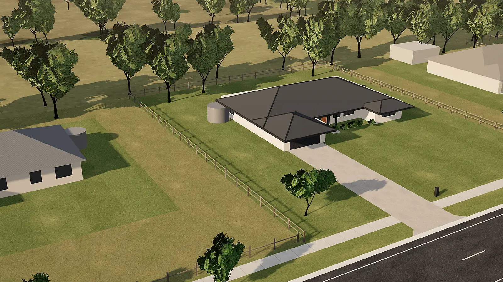
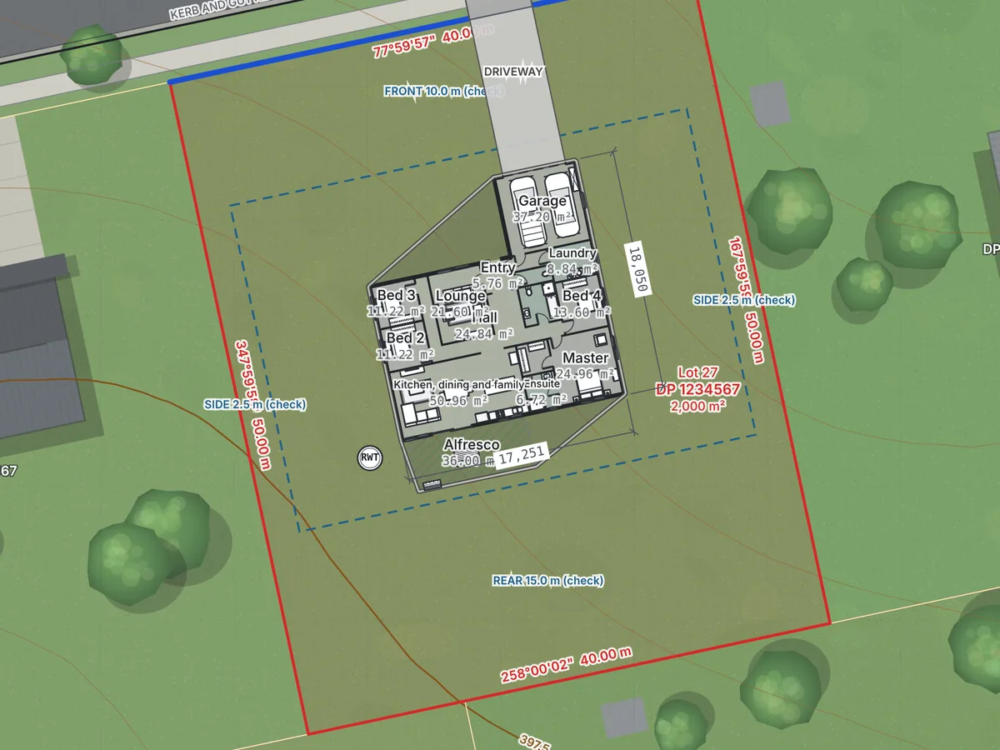
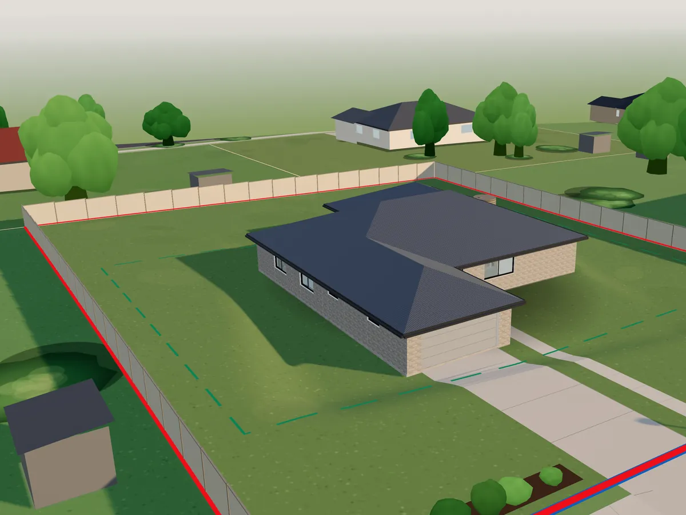
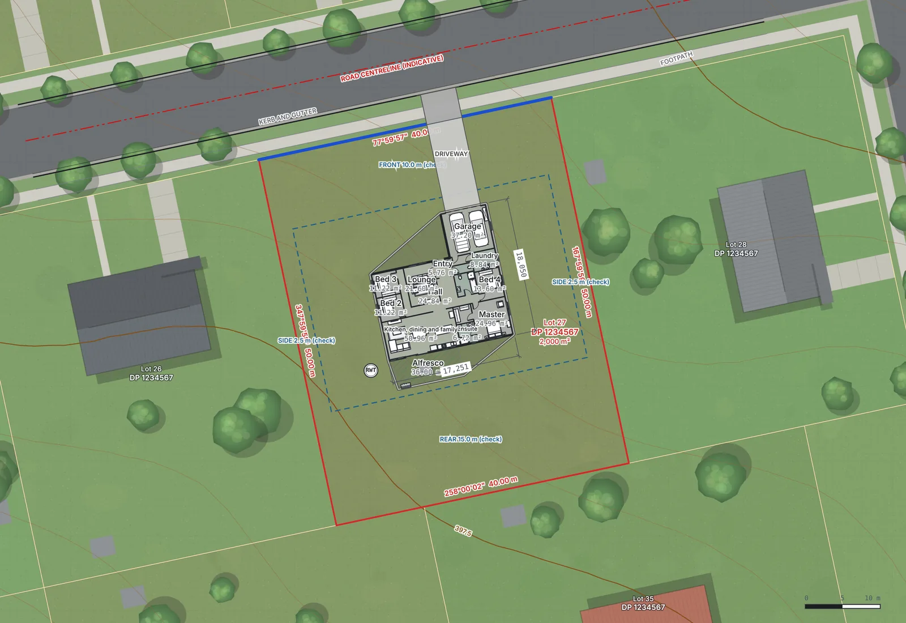
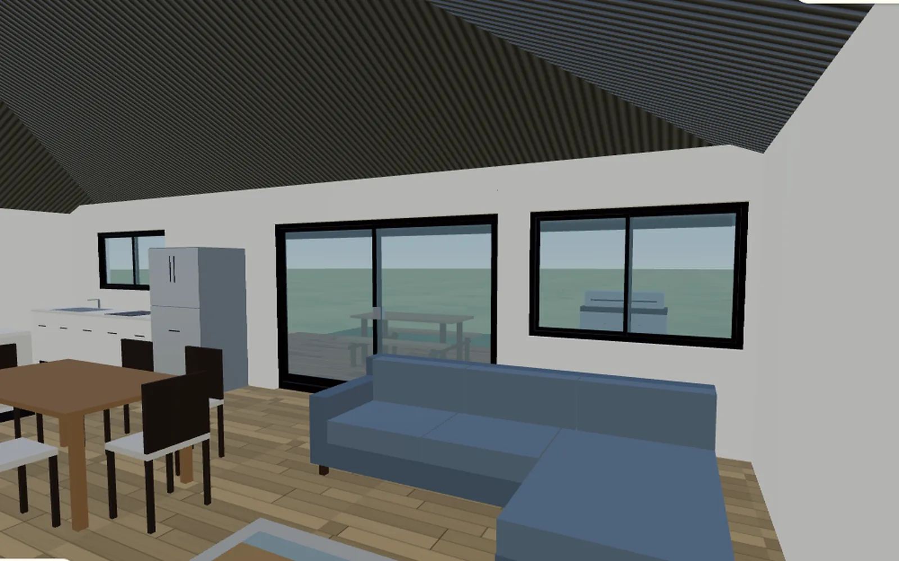
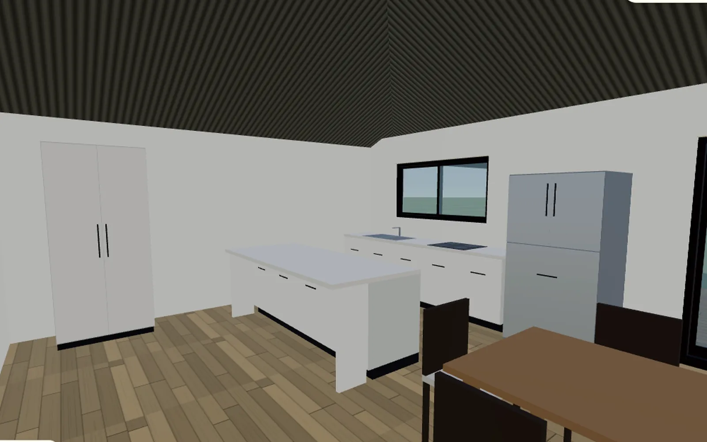
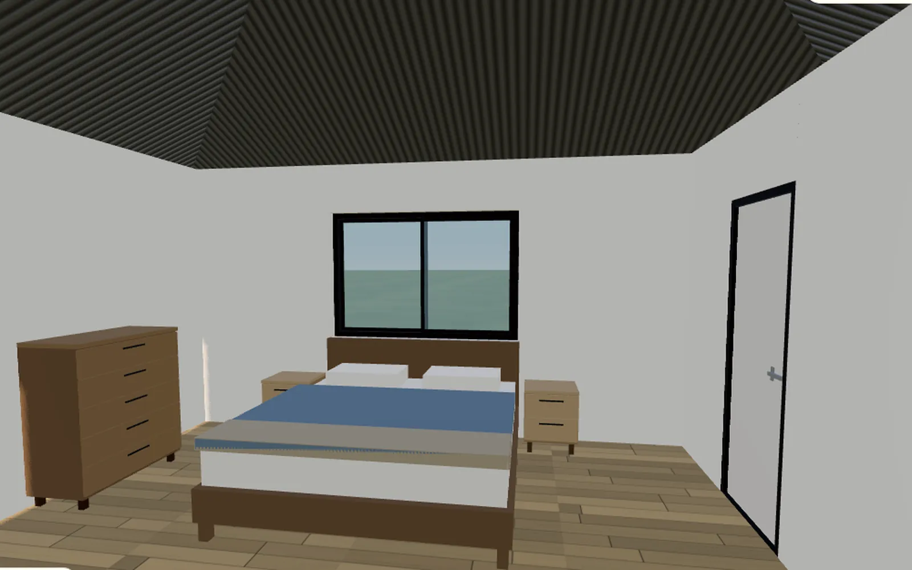
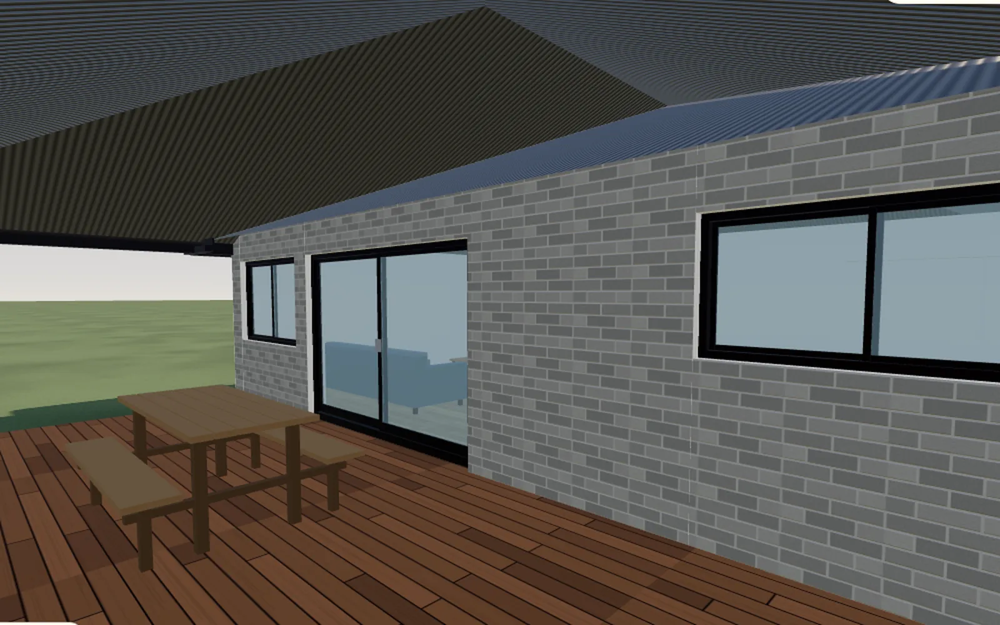
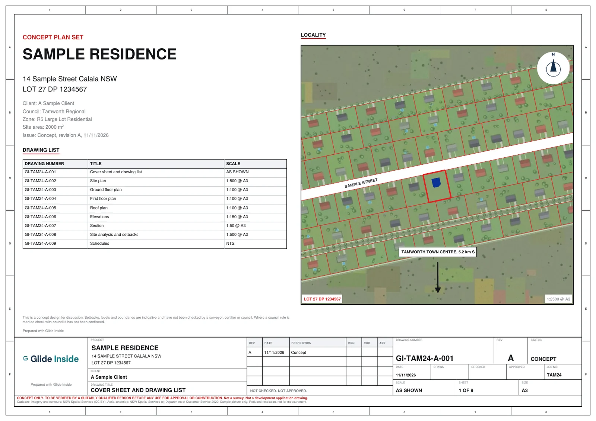
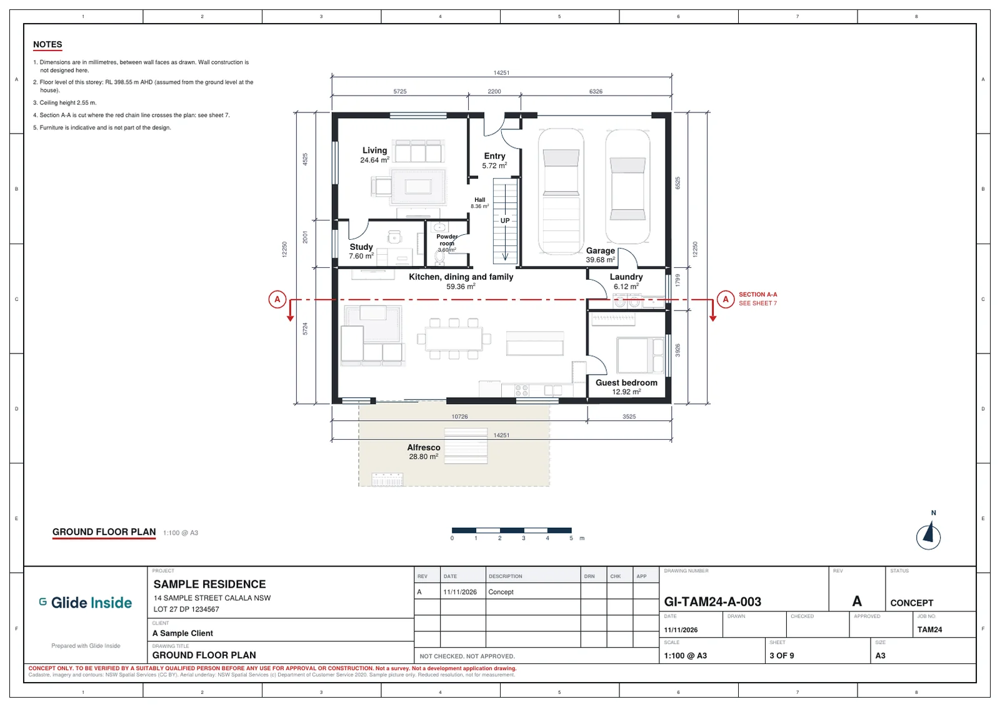

Draw and view
Free
The 2D editor, the 3D view and the walk through, with every starting plan.
Start designingSelect your builder
Choose your builder to sign in to their house designs, set up for your block.
Type an address. Your lot, its setbacks and the street load in 3D. Drop in a house, walk through the rooms and take away a plan set. Built for regional NSW and Queensland.

Glide 4 bedroom
Proposed Lot 1, 2,000 m², 40 × 50 m
Standard colours
Within indicative setbacks
A sample lot in the Pocket Architect 3D view. Concept plans, not construction drawings.
No drafting software and no site visit to get started. The block, the rules and the house are in the one view.
Find my block looks up the lot from the state cadastre.

The boundary, neighbours, aerial, contours and setbacks load for the site.

Place a design, move it to fit, then walk through it room by room.
Start from the lot as it is recorded, not a blank page. The lines that matter for siting a house are drawn before you place anything.
Setbacks are indicative. Confirm them with your council or a private certifier before you rely on them.

The 3D model builds as the plan changes. Glide from room to room, check the light in the living area, and see how the alfresco sits off the kitchen.




When the design is settled, export a drawing set laid out the way an engineer would issue it: title blocks, drawing list, scale bars and a north point on every sheet.
Concept plans, not construction drawings. They are not a development application or a building approval.


Load your house range once. Each client gets a login, finds their block and places your designs on it, in your colours and under your name.
Issue a login per client from the builder portal. You see every block and design they try.
Your logo and colours on the designer and on the client’s PDF.
When a client is ready, send the job to JCE Infrastructure for engineering and DA plans.
Try it with your own staff and designs before a client ever logs in.
All prices are in Australian dollars and include GST.
Free
The 2D editor, the 3D view and the walk through, with every starting plan.
Start designingA$30per job
The PDF plan set, a DXF, the 3D model files and 500 AI credits for the job.
See what is includedA$10each
A 3D fly-through video or complex renderings, made by the Glide Inside team.
See pricingGlide Inside is led by a qualified civil engineer, BEng Civil (Hons), MIEAust. Lots, setbacks, levels and drainage are the everyday work behind it.
Glide Inside is a trading name of JCE Infrastructure Pty Ltd, a civil, hydraulic and infrastructure engineering consultancy in regional NSW.
Questions people ask before they draw their first plan. Looking for a plan to start from? Browse the plan library.
A granny flat is a small self contained home on the same lot as a main house, often called a secondary dwelling. Most have one or two bedrooms, a kitchen, a bathroom and a living area.
In NSW a secondary dwelling is generally limited to 60 m² of floor area outside rural zones. Rules vary by zone and council, so check with your council before you build.
Yes. In NSW a granny flat needs either a complying development certificate from your council or a private certifier, if it meets all the standards, or a development application. Pocket Architect concept plans help you talk it through, but they are not approval documents.
Yes. Start from the garage and workshop shed or the farm machinery shed, draw the rooms you want inside and view it in 3D. Whether a shed can be lived in depends on your council and the building code.
No. Outputs are concept designs. They are not construction drawings or development application documents, and are not checked against planning controls or the National Construction Code.
Drawing and viewing are free. A$30 per job (incl. GST) unlocks a PDF plan set, a DXF for CAD, a 3D model file and an interactive HTML file that opens offline. A 3D fly-through add-on is A$10 and complex renderings are A$10, made by the Glide Inside team.
No account is needed to draw. Your work saves in your browser. When you pay, Stripe collects your email and we use it to restore your purchase.
Yes. Pocket Architect has starting plans for granny flats, duplexes, 4 bedroom houses, sheds and extensions. Open any of them from the plan library and change it to suit your site.
Glide Inside's director is a qualified civil engineer and can assist with preliminary subdivision feasibility.
Yes. A common path is a subdivision concept first, then Pocket Architect for the buildings on each lot.
Open the editor, pick a design and see how it sits.
Glide Inside provides concept planning tools only. Setbacks and other planning controls shown are indicative, are not a planning or building approval, and must be checked with the relevant council and a suitably qualified person before you rely on them.